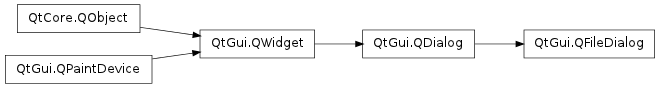

QFileDialog ¶

Synopsis ¶
Functions ¶
- def acceptMode ()
- def confirmOverwrite ()
- def defaultSuffix ()
- def directory ()
- def fileMode ()
- def filter ()
- def filters ()
- def history ()
- def iconProvider ()
- def isNameFilterDetailsVisible ()
- def isReadOnly ()
- def itemDelegate ()
- def labelText (label)
- def nameFilters ()
- def open (receiver, member)
- def options ()
- def proxyModel ()
- def resolveSymlinks ()
- def restoreState (state)
- def saveState ()
- def selectFile (filename)
- def selectFilter (filter)
- def selectNameFilter (filter)
- def selectedFiles ()
- def selectedFilter ()
- def selectedNameFilter ()
- def setAcceptMode (mode)
- def setConfirmOverwrite (enabled)
- def setDefaultSuffix (suffix)
- def setDirectory (directory)
- def setDirectory (directory)
- def setFileMode (mode)
- def setFilter (filter)
- def setFilter (filters)
- def setFilters (filters)
- def setHistory (paths)
- def setIconProvider (provider)
- def setItemDelegate (delegate)
- def setLabelText (label, text)
- def setNameFilter (filter)
- def setNameFilterDetailsVisible (enabled)
- def setNameFilters (filters)
- def setOption (option[, on=true])
- def setOptions (options)
- def setProxyModel (model)
- def setReadOnly (enabled)
- def setResolveSymlinks (enabled)
- def setSidebarUrls (urls)
- def setViewMode (mode)
- def sidebarUrls ()
- def testOption (option)
- def viewMode ()
Signals ¶
- def currentChanged (path)
- def directoryEntered (directory)
- def fileSelected (file)
- def filesSelected (files)
- def filterSelected (filter)
Static functions ¶
- def getExistingDirectory ([parent=None[, caption=”“[, dir=”“[, options=QFileDialog.ShowDirsOnly]]]])
- def getOpenFileName ([parent=None[, caption=”“[, dir=”“[, filter=”“[, selectedFilter=”“[, options=0]]]]]])
- def getOpenFileNames ([parent=None[, caption=”“[, dir=”“[, filter=”“[, selectedFilter=”“[, options=0]]]]]])
- def getSaveFileName ([parent=None[, caption=”“[, dir=”“[, filter=”“[, selectedFilter=”“[, options=0]]]]]])
Detailed Description ¶
The PySide.QtGui.QFileDialog class provides a dialog that allow users to select files or directories.
The PySide.QtGui.QFileDialog class enables a user to traverse the file system in order to select one or many files or a directory.
The easiest way to create a PySide.QtGui.QFileDialog is to use the static functions. On Windows, Mac OS X, KDE and GNOME, these static functions will call the native file dialog when possible.
fileName = QFileDialog . getOpenFileName ( self , tr ( "Open Image" ), "/home/jana" , tr ( "Image Files (*.png *.jpg *.bmp)" ))In the above example, a modal PySide.QtGui.QFileDialog is created using a static function. The dialog initially displays the contents of the “/home/jana” directory, and displays files matching the patterns given in the string “Image Files (*.png *.jpg *.bmp)”. The parent of the file dialog is set to this , and the window title is set to “Open Image”.
If you want to use multiple filters, separate each one with two semicolons. For example:
"Images (*.png *.xpm *.jpg);;Text files (*.txt);;XML files (*.xml)"You can create your own PySide.QtGui.QFileDialog without using the static functions. By calling PySide.QtGui.QFileDialog.setFileMode() , you can specify what the user must select in the dialog:
dialog = QFileDialog ( self ) dialog . setFileMode ( QFileDialog . AnyFile )In the above example, the mode of the file dialog is set to AnyFile , meaning that the user can select any file, or even specify a file that doesn’t exist. This mode is useful for creating a “Save As” file dialog. Use ExistingFile if the user must select an existing file, or Directory if only a directory may be selected. See the QFileDialog.FileMode enum for the complete list of modes.
The PySide.QtGui.QFileDialog.fileMode() property contains the mode of operation for the dialog; this indicates what types of objects the user is expected to select. Use PySide.QtGui.QFileDialog.setNameFilter() to set the dialog’s file filter. For example:
dialog . setNameFilter ( tr ( "Images (*.png *.xpm *.jpg)" ))In the above example, the filter is set to "Images (*.png *.xpm *.jpg)" , this means that only files with the extension png , xpm , or jpg will be shown in the PySide.QtGui.QFileDialog . You can apply several filters by using PySide.QtGui.QFileDialog.setNameFilters() . Use PySide.QtGui.QFileDialog.selectNameFilter() to select one of the filters you’ve given as the file dialog’s default filter.
The file dialog has two view modes: List and Detail . List presents the contents of the current directory as a list of file and directory names. Detail also displays a list of file and directory names, but provides additional information alongside each name, such as the file size and modification date. Set the mode with PySide.QtGui.QFileDialog.setViewMode() :
dialog . setViewMode ( QFileDialog . Detail )The last important function you will need to use when creating your own file dialog is PySide.QtGui.QFileDialog.selectedFiles() .
if dialog . exec_ (): fileNames = dialog . selectedFiles ()In the above example, a modal file dialog is created and shown. If the user clicked OK, the file they selected is put in fileName .
The dialog’s working directory can be set with PySide.QtGui.QFileDialog.setDirectory() . Each file in the current directory can be selected using the PySide.QtGui.QFileDialog.selectFile() function.
The Standard Dialogs example shows how to use PySide.QtGui.QFileDialog as well as other built-in Qt dialogs.
See also
PySide.QtCore.QDir PySide.QtCore.QFileInfo PySide.QtCore.QFile PySide.QtGui.QPrintDialog PySide.QtGui.QColorDialog PySide.QtGui.QFontDialog Standard Dialogs Example Application Example
- class PySide.QtGui. QFileDialog ( parent , f ) ¶
- class PySide.QtGui. QFileDialog ( [ parent=None [ , caption="" [ , directory="" [ , filter="" ] ] ] ] )
-
Parameters: - f – PySide.QtCore.Qt.WindowFlags
- directory – unicode
- caption – unicode
- filter – unicode
- parent – PySide.QtGui.QWidget
Constructs a file dialog with the given parent and caption that initially displays the contents of the specified directory . The contents of the directory are filtered before being shown in the dialog, using a semicolon-separated list of filters specified by filter .
- PySide.QtGui.QFileDialog. FileMode ¶
-
This enum is used to indicate what the user may select in the file dialog; i.e. what the dialog will return if the user clicks OK.
Constant Description QFileDialog.AnyFile The name of a file, whether it exists or not. QFileDialog.ExistingFile The name of a single existing file. QFileDialog.Directory The name of a directory. Both files and directories are displayed. QFileDialog.ExistingFiles The names of zero or more existing files. This value is obsolete since Qt 4.5:
Constant Description QFileDialog.DirectoryOnly Use Directory and setOption( ShowDirsOnly , true) instead.
- PySide.QtGui.QFileDialog. Option ¶
-
Constant Description QFileDialog.ShowDirsOnly Only show directories in the file dialog. By default both files and directories are shown. (Valid only in the Directory file mode.) QFileDialog.DontResolveSymlinks Don’t resolve symlinks in the file dialog. By default symlinks are resolved. QFileDialog.DontConfirmOverwrite Don’t ask for confirmation if an existing file is selected. By default confirmation is requested. QFileDialog.DontUseNativeDialog Don’t use the native file dialog. By default, the native file dialog is used unless you use a subclass of PySide.QtGui.QFileDialog that contains the Q_OBJECT() macro. QFileDialog.ReadOnly Indicates that the model is readonly. QFileDialog.HideNameFilterDetails Indicates if the file name filter details are hidden or not. QFileDialog.DontUseSheet In previous versions of Qt, the static functions would create a sheet by default if the static function was given a parent. This is no longer supported and does nothing in Qt 4.5, The static functions will always be an application modal dialog. If you want to use sheets, use QFileDialog.open() instead.
- PySide.QtGui.QFileDialog. DialogLabel ¶
-
Constant Description QFileDialog.LookIn QFileDialog.FileName QFileDialog.FileType QFileDialog.Accept QFileDialog.Reject
- PySide.QtGui.QFileDialog. ViewMode ¶
-
This enum describes the view mode of the file dialog; i.e. what information about each file will be displayed.
Constant Description QFileDialog.Detail Displays an icon, a name, and details for each item in the directory. QFileDialog.List Displays only an icon and a name for each item in the directory.
- PySide.QtGui.QFileDialog. AcceptMode ¶
-
Constant Description QFileDialog.AcceptOpen QFileDialog.AcceptSave
- PySide.QtGui.QFileDialog. acceptMode ( ) ¶
-
Return type: PySide.QtGui.QFileDialog.AcceptMode This property holds the accept mode of the dialog.
The action mode defines whether the dialog is for opening or saving files.
By default, this property is set to AcceptOpen .
See also
QFileDialog.AcceptMode
- PySide.QtGui.QFileDialog. confirmOverwrite ( ) ¶
-
Return type: PySide.QtCore.bool This property holds whether the filedialog should ask before accepting a selected file, when the accept mode is AcceptSave .
Use setOption( DontConfirmOverwrite , !*enabled* ) or !testOption( DontConfirmOverwrite ) instead.
- PySide.QtGui.QFileDialog. currentChanged ( path ) ¶
-
Parameters: path – unicode
- PySide.QtGui.QFileDialog. defaultSuffix ( ) ¶
-
Return type: unicode This property holds suffix added to the filename if no other suffix was specified.
This property specifies a string that will be added to the filename if it has no suffix already. The suffix is typically used to indicate the file type (e.g. “txt” indicates a text file).
- PySide.QtGui.QFileDialog. directory ( ) ¶
-
Return type: PySide.QtCore.QDir Returns the directory currently being displayed in the dialog.
- PySide.QtGui.QFileDialog. directoryEntered ( directory ) ¶
-
Parameters: directory – unicode
- PySide.QtGui.QFileDialog. fileMode ( ) ¶
-
Return type: PySide.QtGui.QFileDialog.FileMode This property holds the file mode of the dialog.
The file mode defines the number and type of items that the user is expected to select in the dialog.
By default, this property is set to AnyFile .
This function will set the labels for the FileName and Accept QFileDialog.DialogLabel s. It is possible to set custom text after the call to PySide.QtGui.QFileDialog.setFileMode() .
See also
QFileDialog.FileMode
- PySide.QtGui.QFileDialog. fileSelected ( file ) ¶
-
Parameters: file – unicode
- PySide.QtGui.QFileDialog. filesSelected ( files ) ¶
-
Parameters: files – list of strings
- PySide.QtGui.QFileDialog. filter ( ) ¶
-
Return type: PySide.QtCore.QDir.Filters Returns the filter that is used when displaying files.
See also
- PySide.QtGui.QFileDialog. filterSelected ( filter ) ¶
-
Parameters: filter – unicode
- PySide.QtGui.QFileDialog. filters ( ) ¶
-
Return type: list of strings Use PySide.QtGui.QFileDialog.nameFilters() instead.
- static PySide.QtGui.QFileDialog. getExistingDirectory ( [ parent=None [ , caption="" [ , dir="" [ , options=QFileDialog.ShowDirsOnly ] ] ] ] ) ¶
-
Parameters: - parent – PySide.QtGui.QWidget
- caption – unicode
- dir – unicode
- options – PySide.QtGui.QFileDialog.Options
Return type: unicode
- static PySide.QtGui.QFileDialog. getOpenFileName ( [ parent=None [ , caption="" [ , dir="" [ , filter="" [ , selectedFilter="" [ , options=0 ] ] ] ] ] ] ) ¶
-
Parameters: - parent – PySide.QtGui.QWidget
- caption – unicode
- dir – unicode
- filter – unicode
- selectedFilter – unicode
- options – PySide.QtGui.QFileDialog.Options
Return type: (fileName, selectedFilter)
- static PySide.QtGui.QFileDialog. getOpenFileNames ( [ parent=None [ , caption="" [ , dir="" [ , filter="" [ , selectedFilter="" [ , options=0 ] ] ] ] ] ] ) ¶
-
Parameters: - parent – PySide.QtGui.QWidget
- caption – unicode
- dir – unicode
- filter – unicode
- selectedFilter – unicode
- options – PySide.QtGui.QFileDialog.Options
Return type: (fileNames, selectedFilter)
- static PySide.QtGui.QFileDialog. getSaveFileName ( [ parent=None [ , caption="" [ , dir="" [ , filter="" [ , selectedFilter="" [ , options=0 ] ] ] ] ] ] ) ¶
-
Parameters: - parent – PySide.QtGui.QWidget
- caption – unicode
- dir – unicode
- filter – unicode
- selectedFilter – unicode
- options – PySide.QtGui.QFileDialog.Options
Return type: (fileName, selectedFilter)
- PySide.QtGui.QFileDialog. history ( ) ¶
-
Return type: list of strings Returns the browsing history of the filedialog as a list of paths.
- PySide.QtGui.QFileDialog. iconProvider ( ) ¶
-
Return type: PySide.QtGui.QFileIconProvider Returns the icon provider used by the filedialog.
- PySide.QtGui.QFileDialog. isNameFilterDetailsVisible ( ) ¶
-
Return type: PySide.QtCore.bool
- PySide.QtGui.QFileDialog. isReadOnly ( ) ¶
-
Return type: PySide.QtCore.bool This property holds Whether the filedialog is read-only.
If this property is set to false, the file dialog will allow renaming, and deleting of files and directories and creating directories.
Use setOption( ReadOnly , enabled ) or testOption( ReadOnly ) instead.
- PySide.QtGui.QFileDialog. itemDelegate ( ) ¶
-
Return type: PySide.QtGui.QAbstractItemDelegate Returns the item delegate used to render the items in the views in the filedialog.
- PySide.QtGui.QFileDialog. labelText ( label ) ¶
-
Parameters: label – PySide.QtGui.QFileDialog.DialogLabel Return type: unicode Returns the text shown in the filedialog in the specified label .
- PySide.QtGui.QFileDialog. nameFilters ( ) ¶
-
Return type: list of strings Returns the file type filters that are in operation on this file dialog.
- PySide.QtGui.QFileDialog. open ( receiver , member ) ¶
-
Parameters: - receiver – PySide.QtCore.QObject
- member – str
This is an overloaded function.
This function connects one of its signals to the slot specified by receiver and member . The specific signal depends is PySide.QtGui.QFileDialog.filesSelected() if PySide.QtGui.QFileDialog.fileMode() is ExistingFiles and PySide.QtGui.QFileDialog.fileSelected() if PySide.QtGui.QFileDialog.fileMode() is anything else.
The signal will be disconnected from the slot when the dialog is closed.
- PySide.QtGui.QFileDialog. options ( ) ¶
-
Return type: PySide.QtGui.QFileDialog.Options
- PySide.QtGui.QFileDialog. proxyModel ( ) ¶
-
Return type: PySide.QtGui.QAbstractProxyModel Returns the proxy model used by the file dialog. By default no proxy is set.
- PySide.QtGui.QFileDialog. resolveSymlinks ( ) ¶
-
Return type: PySide.QtCore.bool This property holds whether the filedialog should resolve shortcuts.
If this property is set to true, the file dialog will resolve shortcuts or symbolic links.
Use setOption( DontResolveSymlinks , !``enabled`` ) or !testOption( DontResolveSymlinks ).
- PySide.QtGui.QFileDialog. restoreState ( state ) ¶
-
Parameters: state – PySide.QtCore.QByteArray Return type: PySide.QtCore.bool Restores the dialogs’s layout, history and current directory to the state specified.
Typically this is used in conjunction with PySide.QtCore.QSettings to restore the size from a past session.
Returns false if there are errors
- PySide.QtGui.QFileDialog. saveState ( ) ¶
-
Return type: PySide.QtCore.QByteArray Saves the state of the dialog’s layout, history and current directory.
Typically this is used in conjunction with PySide.QtCore.QSettings to remember the size for a future session. A version number is stored as part of the data.
- PySide.QtGui.QFileDialog. selectFile ( filename ) ¶
-
Parameters: filename – unicode Selects the given filename in the file dialog.
- PySide.QtGui.QFileDialog. selectFilter ( filter ) ¶
-
Parameters: filter – unicode Use PySide.QtGui.QFileDialog.selectNameFilter() instead.
- PySide.QtGui.QFileDialog. selectNameFilter ( filter ) ¶
-
Parameters: filter – unicode Sets the current file type filter . Multiple filters can be passed in filter by separating them with semicolons or spaces.
- PySide.QtGui.QFileDialog. selectedFiles ( ) ¶
-
Return type: list of strings Returns a list of strings containing the absolute paths of the selected files in the dialog. If no files are selected, or the mode is not ExistingFiles or ExistingFile , PySide.QtGui.QFileDialog.selectedFiles() contains the current path in the viewport.
- PySide.QtGui.QFileDialog. selectedFilter ( ) ¶
-
Return type: unicode Use PySide.QtGui.QFileDialog.selectedNameFilter() instead.
- PySide.QtGui.QFileDialog. selectedNameFilter ( ) ¶
-
Return type: unicode Returns the filter that the user selected in the file dialog.
- PySide.QtGui.QFileDialog. setAcceptMode ( mode ) ¶
-
Parameters: mode – PySide.QtGui.QFileDialog.AcceptMode This property holds the accept mode of the dialog.
The action mode defines whether the dialog is for opening or saving files.
By default, this property is set to AcceptOpen .
See also
QFileDialog.AcceptMode
- PySide.QtGui.QFileDialog. setConfirmOverwrite ( enabled ) ¶
-
Parameters: enabled – PySide.QtCore.bool This property holds whether the filedialog should ask before accepting a selected file, when the accept mode is AcceptSave .
Use setOption( DontConfirmOverwrite , !*enabled* ) or !testOption( DontConfirmOverwrite ) instead.
- PySide.QtGui.QFileDialog. setDefaultSuffix ( suffix ) ¶
-
Parameters: suffix – unicode This property holds suffix added to the filename if no other suffix was specified.
This property specifies a string that will be added to the filename if it has no suffix already. The suffix is typically used to indicate the file type (e.g. “txt” indicates a text file).
- PySide.QtGui.QFileDialog. setDirectory ( directory ) ¶
-
Parameters: directory – unicode Sets the file dialog’s current directory .
See also
- PySide.QtGui.QFileDialog. setDirectory ( directory )
-
Parameters: directory – PySide.QtCore.QDir This is an overloaded function.
- PySide.QtGui.QFileDialog. setFileMode ( mode ) ¶
-
Parameters: mode – PySide.QtGui.QFileDialog.FileMode This property holds the file mode of the dialog.
The file mode defines the number and type of items that the user is expected to select in the dialog.
By default, this property is set to AnyFile .
This function will set the labels for the FileName and Accept QFileDialog.DialogLabel s. It is possible to set custom text after the call to PySide.QtGui.QFileDialog.setFileMode() .
See also
QFileDialog.FileMode
- PySide.QtGui.QFileDialog. setFilter ( filters ) ¶
-
Parameters: filters – PySide.QtCore.QDir.Filters
- PySide.QtGui.QFileDialog. setFilter ( filter )
-
Parameters: filter – unicode Use PySide.QtGui.QFileDialog.setNameFilter() instead.
- PySide.QtGui.QFileDialog. setFilters ( filters ) ¶
-
Parameters: filters – list of strings Use PySide.QtGui.QFileDialog.setNameFilters() instead.
See also
- PySide.QtGui.QFileDialog. setHistory ( paths ) ¶
-
Parameters: paths – list of strings Sets the browsing history of the filedialog to contain the given paths .
See also
- PySide.QtGui.QFileDialog. setIconProvider ( provider ) ¶
-
Parameters: provider – PySide.QtGui.QFileIconProvider Sets the icon provider used by the filedialog to the specified provider .
- PySide.QtGui.QFileDialog. setItemDelegate ( delegate ) ¶
-
Parameters: delegate – PySide.QtGui.QAbstractItemDelegate Sets the item delegate used to render items in the views in the file dialog to the given delegate .
Warning
You should not share the same instance of a delegate between views. Doing so can cause incorrect or unintuitive editing behavior since each view connected to a given delegate may receive the PySide.QtGui.QAbstractItemDelegate.closeEditor() signal, and attempt to access, modify or close an editor that has already been closed.
Note that the model used is PySide.QtGui.QFileSystemModel . It has custom item data roles, which is described by the QFileSystemModel.Roles enum. You can use a PySide.QtGui.QFileIconProvider if you only want custom icons.
- PySide.QtGui.QFileDialog. setLabelText ( label , text ) ¶
-
Parameters: - label – PySide.QtGui.QFileDialog.DialogLabel
- text – unicode
Sets the text shown in the filedialog in the specified label .
See also
- PySide.QtGui.QFileDialog. setNameFilter ( filter ) ¶
-
Parameters: filter – unicode Sets the filter used in the file dialog to the given filter .
If filter contains a pair of parentheses containing one or more of anything*something , separated by spaces, then only the text contained in the parentheses is used as the filter. This means that these calls are all equivalent:
dialog . setNameFilter ( "All C++ files (*.cpp *.cc *.C *.cxx *.c++)" ) dialog . setNameFilter ( "*.cpp *.cc *.C *.cxx *.c++" )
- PySide.QtGui.QFileDialog. setNameFilterDetailsVisible ( enabled ) ¶
-
Parameters: enabled – PySide.QtCore.bool
- PySide.QtGui.QFileDialog. setNameFilters ( filters ) ¶
-
Parameters: filters – list of strings Sets the filters used in the file dialog.
filters = QStringList() filters << "Image files (*.png *.xpm *.jpg)" << "Text files (*.txt)" << "Any files (*)" dialog = QFileDialog(this) dialog.setNameFilters(filters) dialog.exec_()
- PySide.QtGui.QFileDialog. setOption ( option [ , on=true ] ) ¶
-
Parameters: - option – PySide.QtGui.QFileDialog.Option
- on – PySide.QtCore.bool
Sets the given option to be enabled if on is true; otherwise, clears the given option .
- PySide.QtGui.QFileDialog. setOptions ( options ) ¶
-
Parameters: options – PySide.QtGui.QFileDialog.Options
- PySide.QtGui.QFileDialog. setProxyModel ( model ) ¶
-
Parameters: model – PySide.QtGui.QAbstractProxyModel Sets the model for the views to the given proxyModel . This is useful if you want to modify the underlying model; for example, to add columns, filter data or add drives.
Any existing proxy model will be removed, but not deleted. The file dialog will take ownership of the proxyModel .
- PySide.QtGui.QFileDialog. setReadOnly ( enabled ) ¶
-
Parameters: enabled – PySide.QtCore.bool This property holds Whether the filedialog is read-only.
If this property is set to false, the file dialog will allow renaming, and deleting of files and directories and creating directories.
Use setOption( ReadOnly , enabled ) or testOption( ReadOnly ) instead.
- PySide.QtGui.QFileDialog. setResolveSymlinks ( enabled ) ¶
-
Parameters: enabled – PySide.QtCore.bool This property holds whether the filedialog should resolve shortcuts.
If this property is set to true, the file dialog will resolve shortcuts or symbolic links.
Use setOption( DontResolveSymlinks , !``enabled`` ) or !testOption( DontResolveSymlinks ).
- PySide.QtGui.QFileDialog. setSidebarUrls ( urls ) ¶
-
Parameters: urls –
- PySide.QtGui.QFileDialog. setViewMode ( mode ) ¶
-
Parameters: mode – PySide.QtGui.QFileDialog.ViewMode This property holds the way files and directories are displayed in the dialog.
By default, the Detail mode is used to display information about files and directories.
See also
QFileDialog.ViewMode
-
Return type: Returns a list of urls that are currently in the sidebar
- PySide.QtGui.QFileDialog. testOption ( option ) ¶
-
Parameters: option – PySide.QtGui.QFileDialog.Option Return type: PySide.QtCore.bool Returns true if the given option is enabled; otherwise, returns false.
- PySide.QtGui.QFileDialog. viewMode ( ) ¶
-
Return type: PySide.QtGui.QFileDialog.ViewMode This property holds the way files and directories are displayed in the dialog.
By default, the Detail mode is used to display information about files and directories.
See also
QFileDialog.ViewMode